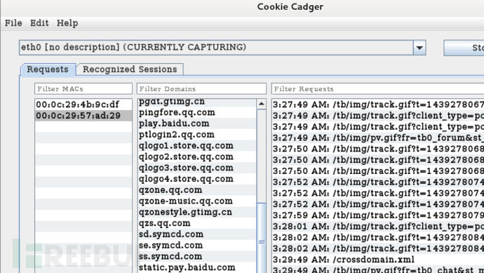

在我们介绍接下来的局域网实战之前，还得说说arp协议，因为接下来的几个局域网攻击手段跟arp协议有很大关系。
ARP协议
一台主机和另一台主机通信，要知道目标的IP地址，但是在局域网中传输数据的网卡却不能直接识别IP地址，所以用ARP解析协议将IP地址解析成MAC地址。ARP协议的基本功能就是通过目标设备的IP地址，来查询目标设备的mac地址。
在局域网的任意一台主机中，都有一个ARP缓存表，里面保存本机已知的此局域网中各主机和路由器的IP地址和MAC地址的对照关系。ARP缓存表的生命周期是有时限的（一般不超过20分钟）。
举个例子：假设局域网中有四台主机
ARP欺骗攻击建立在局域网主机间相互信任的基础上的当A发广播询问：我想知道IP是192.168.0.3的硬件地址是多少？
此时B当然会回话：我是IP192.168.0.3我的硬件地址是mac-b，可是此时IP地址是192.168.0.4的C也非法回了：我是IP192.168.0.3,我的硬件地址是mac-c。而且是大量的。
所以A就会误信192.168.0.3的硬件地址是mac-c，而且动态更新缓存表这样主机C就劫持了主机A发送给主机B的数据，这就是ARP欺骗的过程。
假如C直接冒充网关，此时主机C会不停的发送ARP欺骗广播，大声说：我的ＩＰ是192.168.0.1，我的硬件地址是ｍａｃ－ｃ，此时局域网内所有主机都被欺骗，更改自己的缓存表，此时Ｃ将会监听到整个局域网发送给互联网的数据报。
我们接下来的攻击过程将由在一个局域网内的两个主机来演示，一个是bt5的10.10.10.128，一个是kali的10.10.10.138。局域网网关为10.10.10.254.
局域网断网攻击
在一个局域网中，我们如果要对某个主机进行断网攻击的话，我们先要查看局域网中的ip。
fping –asg 10.10.10.0/24
发现了两个主机，一个是10.10.10.128，一个是10.10.10.138。
对10.10.10.128这台主机的上网情况进行测试，开始攻击之前是能上网的。
然后，我们要查看这个局域网中的网关是多少。
然后，我们要查看这个局域网中的网关是多少。
在10.10.10.128里我们可以看到，在我们进行断网攻击之后，果真断网了。
获取局域网中目标的图片浏览记录
这里抓取目标的图片浏览记录和断网攻击都是利用了arp协议，两个存在一定的相同点。
首先，先在10.10.10.138上设置网络转发。目标受欺骗后会将流量发到你的主机上，以你的主机为中转站传至网关。
然后还是接着arp欺骗。
接下来就是获取本机网卡的图片。
（从eth0网卡中抓取图片包）
好，下面就是实际检验效果的时候了。
我们在主机中成功获取了目标主机在浏览的图片。
综合应用之http账号密码截取
http账号密码截取是在前面的基础上的延伸。
开始我们还是跟前面一样设置网卡转发以及arp欺骗。接着我们就进行http环境下的网络账号密码嗅探。
（从网络流量中抓取账号密码，-T是以文本模式显示，q是以安静模式）
做完这些，我们来检验成果。
10.10.10.128进行登录。

上面10.10.10.128刚一登陆，这边我们就得到了账号及密码。
有些网站支持中文账号密码，这里我们截取的信息可能一下得到一些乱码，这里我们可以通过URL解码，得出中文的账号密码。
https账号密码获取
有证书认证和传输加密的https传输比http传输的安全性要强许多。我们这里获取https传输的账号密码的思路是将https换原为http传输，然后再进行http的账号密码抓取工作。
首先，将https传输转换为http传输。
再接着还是设置网卡转发、arp欺骗、网络抓包。这里和上面的http的基本差不多，就不再多说了。（有些浏览器的安全性比较高，可能会对我们的工作有所影响。）
会话劫持
局域网中的会话劫持有好几种方法，这里就只说一种简单粗暴的方法。那就是使用CookieCadger抓包。
首先哈，也没前面那么复杂。先把这个cookie cadger打开监听。Cookie cadger是一款用Java写的抓包工具，你在windows系统上也可以用它。

这里我们在10.10.10.128上登陆了百度贴吧和qq空间，我们可以在10.10.10.138的cookie cadger中打开10.10.10.128上的会话。
可以看到，根本就不需要登陆，我们也可以劫持局域网中他人的会话。
局域网中还有很多好玩的地方，它与外网相比更容易点，不过不要整蛊室友哦，不然被发现了会被室友追上十条街的<(￣︶￣)>。
https://www.freebuf.com/articles/network/74700.html